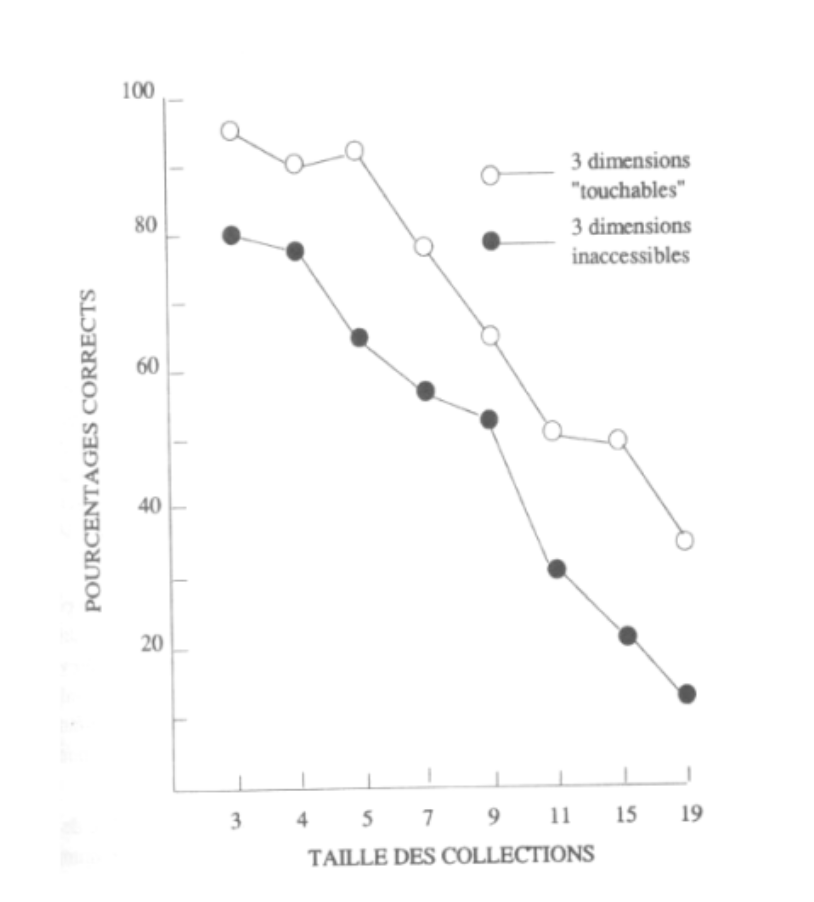
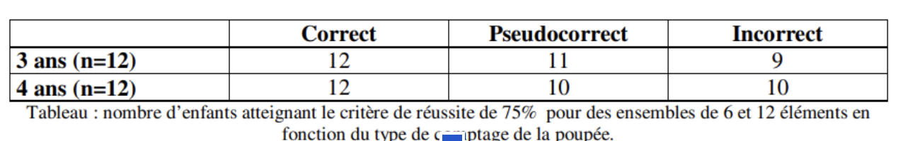
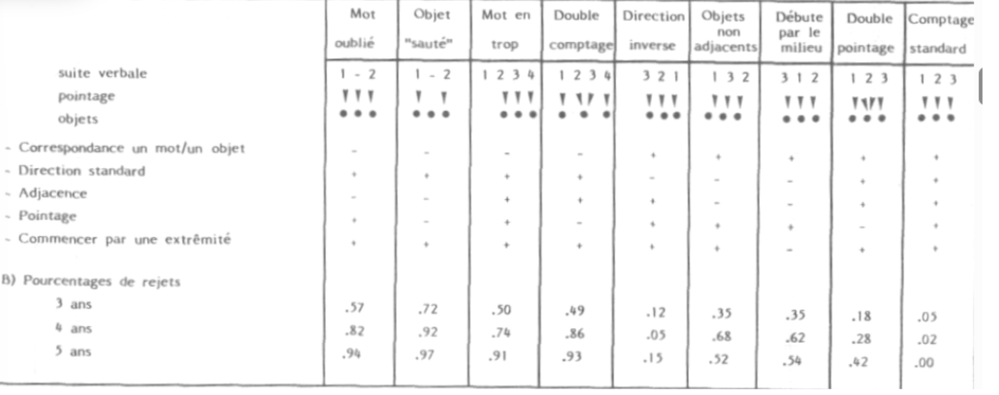
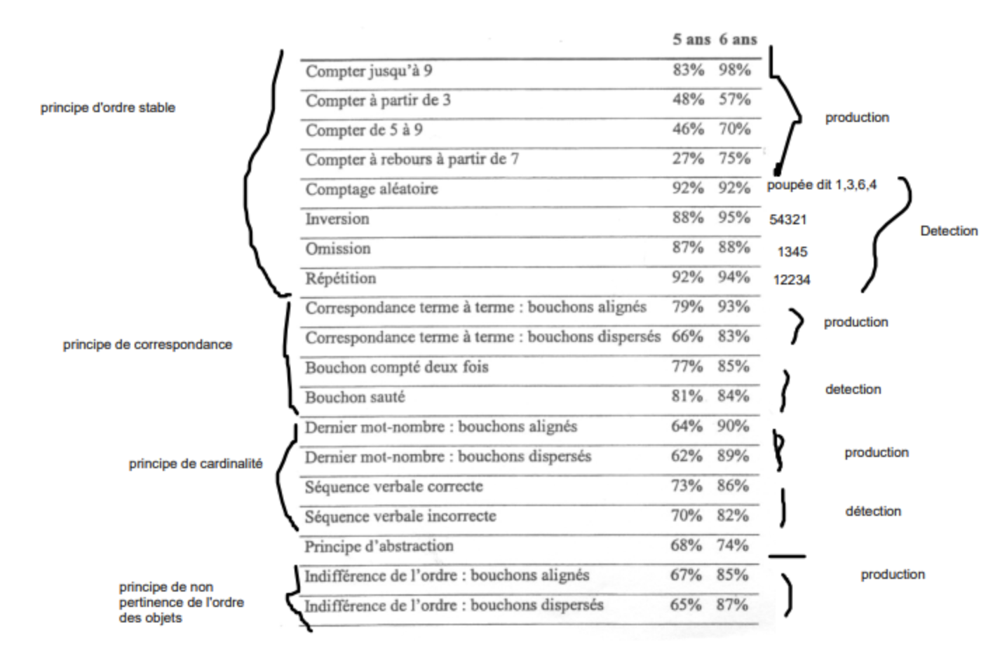
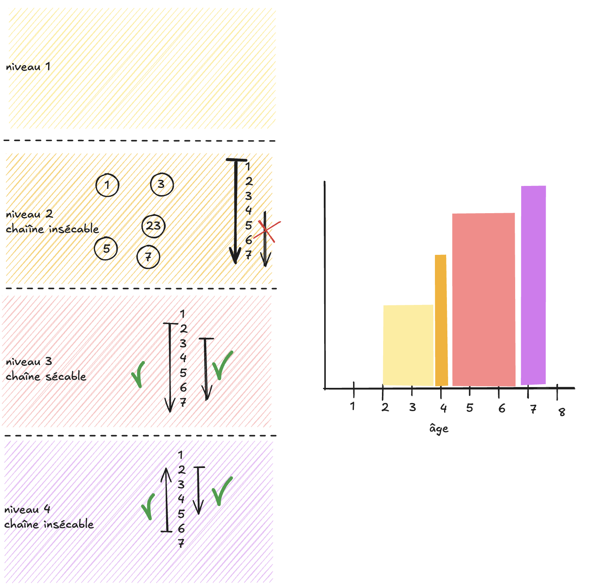

Partie II - Développement du Nombre
Estimation de l’intégrité de la prise de note : 8/10
1. Histoire du nombre
Chiffres : unités qui nous permettent d’écrire les nombres. Ils ont une histoire chaotique et mondiale. Les nombres n’ont longtemps pas existé. Les 3 premiers nombres ont un statut particulier et, pour les deux premiers, sont toujours nommés dans les cultures. En revanche, 3 veut souvent dire “plus que 2”. C’est un peu la limite de notre perception pour voir un en coup d’œil, au-delà duquel il faut faire un traiement séquentiel. En français, trois vient de très qui vient de trans (au-delà). En latin aussi, en anglais aussi, arabe.
Premier niveau : quantification agie : correspondance terme-à-terme, quand on fait correspondre à chaque élément d’une collection les éléments d’une autre collection. On utilise des moyens concrets en égalisant des collections de choses. Entailles dans la roche pour compter le bétail en Mésopotamie. On peut aussi compter avec le corps humain pour cette correspondance terme-à-terme. Ils vont nommer leurs parties du corps et les utiliser à la place de chiffres.
Deuxieme niveau : représentation concrète des nombres élevés. On va remplacer les cailloux par des bâtonnets, qui donne le niveau de représentations concrètes des nombres élevés (premiers par vers la symbolisation, apparition de la base). On va commencer à remplacer des grosses quantités de petits cailloux par des gros cailloux. Base 10 vient des doigts de la main. Base 60 en mésopotamie viendrait du croisement de deux populations utilisant la base 5 et l’autre 12 (provenant des articulations de la main) et on multiplie le tout. 12000 ans avant JC, on remplace cailloux par bâtons d’argile (calculies).
3e niveau : graphisme remplace les calculies. Civilisation de Sumer, où les comptables écrivent sur des tablettes d’argiles, où on représente des quantités par des signes.
4e niveau : quand on bascule des symboles (lien entre signifié et signifiant) vers les signes (pas de lien entre signifié et signifiant). Les civilisations ont souvent des symboles jusqu’au 3. On développe alors des signes pour les quantités, ce qui nous renvoie à ce qu’on disait au début du cours sur les limites de la perception.
5 niveau : on a un signe pour chaque chiffre, le principe de position, et le 0 qui apprait en 500 avanat jésus-christ au nord de l’Inde. Le principe de position est qu’on met les unités à droite, puis dizaines à gauche, et centaines encore à gauche etc. Les arabes vont après diffuser ces chiffres dans le reste du monde.
2. Approche structuraliste du nombre (Piaget)
On a deux types de nombres : le nombre ordinal repose sur sériation et de relations asymétriques entre les quantités. Le nombre cardinal est la quantité, le nombre d’éléments dans un ensemble. Repose sur la notion d’inclusion de classes. Dans 7, il y a toutes les quantités jusqu’à 7 qui sont incluses.
Piaget part de ces deux aspects du nombre, et regardent comment ils se construisent chez l’enfant. On aurait deux systèmes logiques propres à chacun. La logique du nombre sera acquise quand l’enfant maîtrise les deux. Celles-ci se construisent simultanément. Il met au point des épreuves sur la logique de l’enfant dans ces fonctions. Pour étudier la logique du nombre ordinal il étudie la sériation, et cardinal l’inclusion des classes. Il va aussi étudier le développement de la conservation du nombre. Le nombre d’éléments d’un ensemble est identique quelque soit la disposition spatiale des objets qui le compose.
Épreuve des jetons : on présente une ligne de jetons à l’enfant, on demande “est-ce qu’il y a la même chose de jetons dans les deux lignes ?”
- Intuition simple : 4-5 ans
- 5-6 ans : intution articulée par correspondance terme-à-terme, mais si on écarte ou ressere les jetons et qu’on pose la question ils pensent qu’ils y en a plus
- Réussite opératoire : 7 ans, arguments d’identité (« c’est les mêmes, on n’a rien enlevé ni ajouté »), de réversibilité (« on peut remettre les jetons comme avant »), de compensation (« la ligne est plus longue mais les jetons sont plus espacés »)
Épreuve de sériation : ranger des baguettes de la plus petite à la plus grande. 3 niveaux de réussite :
- Intuition simple (avant 5 ans) : font des groupes de deux, avec une petite, une grande, mais n’utilise pas toute la série; ou rangent le haut des baguettes dans un ordre croissant sans prendre en compte leur taille réel (erreur perceptive)
- Intuition articulée (5 ans) : les enfants font la série par tâtonnement par essai/erreur
- Réussite opératoire (6 ans et plus) : utilisent des méthodes systématiques :
- Algorithme extremum : met les plus extrêmes en premier
- Insertion : compare les baguettes en paires
Ça lui permet de comprendre le principe de transitivité : si A < B et B < C alors A < C.
Épreuve de classification et de quantification de l’inclusion des classes. On prend une classe (fleurs) avec deux types de fleurs (rose et marguerite). On vérifie qu’il sait bien que les deux sont des fleurs. On va mettre plus de marguerites que de roses. On lui demande de comparer le nombre de marguerites aux nombres de fleurs.
Pour construire les classes logiques, l’enfant doit comprendre la relation entre compréhension et extension : les critères d’une classe et les objets qu’elle contient. Ces deux aspects varient en sens inverse : plus on ajoute de critères, plus la classe est restreinte (« fleur » a une extension large, « rose » une extension étroite).
- Compréhension : ensemble des propriétés (ressemblances et différences) qui définissent la classe, c’est-à-dire les critères auxquels on reconnaît qu’un élément en fait partie.
- Extension : ensemble des éléments qui satisfont ces critères, autrement dit la classe elle-même, dans sa portée.
Chez l’enfant de moins de 8 ans, il répond qu’il y a plus de marguerites car il n’y a que 2 roses. Au lieu de comparer A à B (marguerites aux fleurs), il compare A à A’ (marguerites aux roses). Réussir cette épreuve veut dire qu’il peut réussir 2 opérations :
- Réunion : A et A’ font partie de B (B = A + A’)
- Dissociation : B - A’ = A
Donc pour Piaget, qui s’intéresse à la logique, il y a 3 opérations nécessaires à la logique du monde. Décomposer les nombres est très important pour le calcul, il faut que l’enfant réussisse ces épreuves.
3. Approche fonctionnaliste
Cette approche s’intéresse à la fonction des comportements de nombre.
Dénombrement : mise en correspondance terme à terme des éléments d’une collection avec les éléments de la suite conventionnelle des noms des nombres (correspondance terme à terme). Deux théories expliquent son développement.
La première est la théorie innéiste de Gelman : théorie des principes en premier (83). Si les animaux sont capables de traiter les nombres, alors ça doit aussi exister chez l’homme. Chomsky (linguiste) dit qu’il y a un programme langage inné, grammaire universelle. Si ça existe pour les animaux, ça peut exister chez les enfants.
On fait une expérience pour observer comment ça se passe chez les petits enfants (compétence basique de compter les petits objets) :
- Effet de la taille des collections (plus ils sont grands, plus taux d’erreur est grand)
- Effet de la manipulation (meilleure performance quand peuvent toucher les objets)

Conclusion : le dénombrement met en jeu d’autres activités que la simple énumération des nombres (pointage, contrôle visuel). De plus, la possibilité de garder la trace du déjà compté par rapport à ce qui reste à compter dépend d’éléments facilitateurs ou inhibiteurs : taille des collections, agencement spatial (si en ligne ça va mais si dispersé faut avoir une bonne stratégie pour pas compter 2x le même objet), accessibilité des éléments (si on peut les déplacer), stratégies dont dispose l’enfant…
Il faut aussi faire la différence entre compétence et performance :
- Compétence : potentialité qu’on a, ce qu’on est capable de faire de manière générale.
- Performance : résultat à un moment donné, dans une tâche donnée (c’est ce qu’on mesure)
Donc on peut avoir la compétence sans avoir la performance. Mais quand on est psychologue, il faut s’approcher au plus près de la compétence et pas que mesurer la performance (difficile). Retour à Gelman : ils approchent au plus près de la compétence, mettent dans des conditions optimales pour montrer que la compétence existe.
Expérience 2 : une poupée compte à la place de l’enfant et il doit juste dire si le comptage est correct ou non.

Conclusion : L’activité de dénombrement est susceptible d’être analysée et dissociée en composantes plus élémentaires (voir les 5 principes). Ces composantes concernent au moins :
- Le repérage spatial ou temporel du déjà compté par rapport à ce qui est encore à compter. Enfant avec difficultés visuo-spatiales en échec, même s’ils maîtrisent le dénombrement.
- L’énumération à bon escient de la série numérique (faut connaître la chaîne numérique verbale sans faire d’erreurs (1,2,3,4,5 etc et pas 1,2,6,4,8)
- La coordination de ces deux activités pour éviter le double comptage ou l’oubli (a et b)
Toute aggravation des contraintes situationnelles liées à l’exécution de l’une ou l’autre de ces composantes entraîne chute de perf. À l’inverse, moins de contraintes révèle des compétences plus précoces. Ici, Gelman allège beaoup ses taches pour voir les compétences, Piaget faisait l’invers : il piège pour voir si la logique suit. Attention, dans une tâche, l’échec peut être à cause de la tâche ou de la compétence qui manque chez l’enfant.
Les 5 principes fondamentaux de comptage (Gelman, 78) :
- Principe d’ordre stable de la chaîne verbal : les mots nombres doivent être engendrés dans le même ordre à chaque comptage
- Principe de stricte correspondance terme à terme entre objets comptés et les noms de nombre : chaque élément de collection doit être désigné par un mot-nombre et un seul
- Principe de cardinalité : le mot nombre qui désigne le dernier élément compté d’une collection représente le nombre total d’éléments.
- Principe d’abstraction : seules sont abstraites des éléments comptés, leurs caractéristiques d’entités distinctes. L’hétérogénéité des collections n’a aucune incidence sur le dénombrement. Quand on compte, on s’en fout de ce que c’est comme objet. compter jouet ou voiture c pareil si on doit compter des jouets
- Principe de non-pertinence de l’ordre des objets : l’ordre dans lequel les éléments d’une collection sont énumérés n’affecte pas le résultat du comptage, à condition que le principe de correspondance terme à terme soit respecté.
C’est une approche innéiste, car on pense que les enfants auraient très tôt la maîtrise de ces principes. Inné ne veut pas dire que la performance existe déjà à la naissance, mais plutôt que c’est programmé dans le développement et que ça va se découvrir seul. La compétence se dévoile en fonction de l’environnement (maturation, tâche).
Résultat d’expérience sur cette théorie : les enfants maîtrisent-ils précocement ces principes (Briars et Siegler, 84) ? 3 groupes d’âges (3,4,5). Tâche : poupée qui compte et enfant doivent dire si comptage de la poupée est ok ou faux.

Les principes testés :
- Stricte correspondance terme à terme : double comptage, mot oublié, mot en trop, objet sauté : poupée ne respecte pas le principe
- Pas principe d’ordre stable : car elle dit toujours 123 dans l’ordre
- Principe de non-pertinence de l’ordre des objets : direction inverse, débute par le milieu, objets non adjacents.
- Pas principe de cardinalité car on ne demande pas à l’enfant combien à des jetons en tout à la fin
Résultats chez des adultes : 100, 100, 100, 100, 0, 0, 0, 0, 0
Résusltats chez les enfants, par principe testé :
- Principe de stricte correspondance terme à terme : les enfants font de plus en plus de rejet correct au fur et à mesure de leur développement (au-dessus de 90% dans toutes les conditions à cinq ans)
- Principe de non-pertinence de l’ordre des objets : les enfants font beauoup de rejets incorrects : plus de 50% et augmentent avec l’âge (sauf sur direction inversée).
Les principes sont loin d’être innés à trois ans. Mais gros effet de l’âge (du développement) sur correspondance terme à terme. Les enfants progressent sur le principe : performance meilleure à trois ans qu’à quatre ans.
C’est à cause de l’environnement et de l’école que les performances baissent : ils apprennent à compter avec les procédures que tout le monde utilise. Ils intègrent que faire un bon comptage, c’est d’aller de gauche à droite. Donc quand on fait autrement, ils rejettent le comptage. Les performances remonteront par ailleurs. Donc ce principe pas inné non plus, mais on constate influence de l’école et de l’apprentissage.
Donc cette étude de Briars et Siegler remet en question le principe inné de cette théorie.
Expérience : Grégoire et Van Nieuwenhoven (95)
Sur une population de 439 enfants de 5 ans et 103 enfants de 6 ans (entrée en CP à six ans).

Principes testés :
- Principe d’ordre stable : tout le premier bloc de comptage (production) + le premier bloc de détection
- principe de stricte correspondance terme à terme : production bouchons alignés + dispersés + les 2 détections d’en dessous
- Cardinalité : dernier mot nombre alignés et dispersés en production + séquence verbale correcte et incorrecte en détection
- Principe d’abstraction : production
- Indifférence de l’ordre : alignés et dispersés en production.
Meilleur performance en détection qu’en production (plus facile de détecter les erreurs des autres personnes). Globalement, meilleurs performance à six ans qu’à cinq ans. Donc globalement, l’école marque des changements importants dans les perfs.
Théorie des principes après (ou des procédures d’abord) : les principes seraient progressivement abstraits d’une pratique répétée des procédures de dénombrement acquises par imitation.
Ce qu’il faut retenir : Travaux de Gelman très influents et importants. Complémentarité sur Piaget, car pas la même logique. Mis l’accent sur distinction compétence et perf et décomposé la tâche de dénombrement en pleins de principes.
Aujourd’hui en test de dyscalculie : épreuve de logique, épreuve avec les principes de Gelman.
4. Que faut-il privilégier dans les apprentissages (activités logico-mathématiques ou activités numériques) ?
Expérience de Clements (84) : Enfant de quatre ans, début d’apprentissage du nombre. Entraînement sur différentes tâches (numérique ou logico-mathématiques) : 3 séances de 20 minutes par semaine pendant 8 semaines. Les 2 types de tâches :
- Activités numériques : activités avec des stratégies de comptage, trouver et produire des numérosités (combien d’éléments dans un ensemble)
- Activités logiques : activités à propos de la sériation et classification.
En post test, on donne les mêmes activités qu’en pré-test. Groupe contrôle : activité de lecture pour éviter l’effet Hawthorne. Résultats :
- Groupes expérimentaux ont un gain plus important que les contrôles.
- Gains en épreuve logique identiques pour les deux groupes expérimentaux.
- Gains beaucoup plus important pour le groupe numérique sur les épreuves numériques. Mais aussi sur les épreuves de conservation.
Transfert du nombre vers la logique plus probable que l’inverse. Sur l’épreuve de conservation le groupe numérique avance plus vite que le groupe logique. On peut donc conclure que faire des travaux juste centrés sur la logique ne sont pas si pertinentes que ça.
5. Nombres et langage
Le nombre est un apprentissage qui se fait dans une culture donnée. Les nombres vont donc être rencontrés par l’enfant dans différents contextes :
- Mathématiques :
- Cardinal
- Ordinal
- Mesure (quantité donnée avec unité)
- Renvoyant aux outils culturels
- Contexte de séquence
- Contexte de dénombrement (combien est-ce qu’on va être à table pour les couverts ?)
- Contexte de lecture : quand l’enfant apprend à reconnaître les chiffres écrits
- Contexte de situations quasi numériques (lignes de bus, téléphone, heure)
Étapes du développement de la chaîne numérique verbales :
- Niveau 1 : niveau du chapelet (2-4 ans), on répète je crois mais ça veut pas dire qu’on sait compter
- Niveau 2 : chaîne insécable (4 ans), les mots sont bien individualisés, commencent à être associés à des objets, commencent à être capables de compte jusqu’à un nombre donné, avec fort taux de contrôle. Mais ils ne peuvent pas compter à partir d’un nombre donné, d’où le terme “insécable”
- Niveau 3 : chaîne sécable (4-6 ans), est capable de partir d’un nombre donné, ou entre 2 nombres. Développent de la flexibilité dans l’utilisation de la chaîne numérique verbale
- Niveau 4 : chaîne terminale (7 ans), peut compter n à partir de x dans n’importe quel sens. Commence à comprendre le rapport entre les nombres

Il faut garder en tête que les nombres oraux ont des nombres de phonèmes assez importants. Deux façons principales d’écrire les nombres : chiffres indo-arabes ou alphabétique. Le lexique en français contient 26 mots permettant de construire tous les nombres. Il contient les nombres de 0 à 16. En français, c’est le bordel, donc l’enfant fait des erreurs. Surtout, les règles ne sont pas les mêmes à l’oral qu’à l’écrit, d’où les problèmes de transcodage, par exemple écrire “1002” quand on demande “102”. En chinois la chaîne verbale est beaucoup plus logique, ce qui les avantage.
6. Procédures de quantification
6.1. Dénombrement et subitizing
- Dénombrement : c’est la correspondance terme à terme des éléments d’une collection avec les éléments de la suite conventionnelle des noms de nombres.
- Subitizing : processus permettant de déterminer très rapidement et aec exactitude de la numérosité de petites collections d’éléments (3-4). Dans les collections plus grandes, il faut utiliser des capacités intentionnelles pour faire un dénombrement
Mandler et Shebo constatent que plus les collections augmentent, plus on met du temps à répondre et on fait des erreurs, alors que de 1 à 3, c’est identique, ce qui impliquerait que les processus attentionnels ne sont pas recrutés, ce sont pas les mêmes processus.
Mais comment est-ce que les enfants acquièrent le sens cardinal des petits nombres ? Par le comptage ou le subitizing ? On fait 2 tâches sur enfants de 3 à 5 ans où on présente des collections de 1 à 6 points.
Dans une première tâche, la présentation est simultanée, les collections sont présentées rapidement sur un écran d’ordinateurs. L’enfant doit dire combien il y a de points.
La seconde, en présentation successive, les éléments sont présentés séquentiellement. L’enfant doit compter les points au fur et à mesure de leur présentation et ensuite indiquer combien il y en a.
Pour chacune des présentations, on va utiliser des configurations familières (dés) ou non familières. Taille des collections : petites numérosités (de 1 à 3) et grandes numérosités (de 4 à 6).
L’essentiel des résultats est que :
- Présentation simultanée > présentation séquentielle pour petites collections. Le subitizing permettrait ici aux enfants de déterminer les nombres d’éléments dans les petits ensembles
- À 4 ans, problème de la cardinalité après le comptage
- À 5 ans, pas de différence entre les tâches
Effet du type de configuration (familière vs non familière) indépendamment de l’âge.
Le subitizing est donc important dans le comptage pour exprimer la cardinalité.
6.2. L’estimation : système du nombre approximatif (SNA)
L’estimation est une procédure peu précise sur des grandes collections. C’est un système universel présent chez les animaux, être humaine dès la naissance, chez l’adulte dans toutes les cultures.
Il y a des illusions reliées, comme celle du solitaire : les points plus denses donnent une impression d’être plus nombreux que moins denses.
Estimation dépend de la loi de Weber : la capacité à différencier deux quantités ne dépend pas de leur différence absolue, mais de leur différence relative (ratio). Avec le développement, les enfants détectent des différences de quantités avec des rations de plus en plus proches de 1.
Les enfants s’appuient-ils sur le système du nombre approximatif (SNA) pour réaliser des calculs symboliques approximatifs ? Étude sur enfants de 5 ans, ne savant donc pas faire de calcul exact, à qui on va raconter des petits scénarios dans lesquels on demande lequel de 2 personnages ont plus ou moins de bonbons. Réponses bien au-dessus du hasard qui veut dire que ces enfants sont capables de faire du calcul approximatif.

C’est surprenant qu’il y ait ce système de nombre approximatif qui permet d’exprimer des quantités et peut faire du calcul approximatif. Et pourtant, quelques années plus tard, au terme d’une intense application, un écolier conclut sans sourcilier que 317 moins 81 fait 376, c’est qu’il y a un problème avec l’école française.
Système du nombre approximatif meilleur = meilleur apprentissage des maths. Et inversement. Mais on constate une différence entre les individus qui ne vont pas du tout à l’école et ceux qui n’y vont pas (chez des enfants d’amazonie). Chez les premiers, la précision de l’approximate number sense.
7. Nombre, quantité et espace
7.1. Effets Stroop
On perçoit des quantités quand on perçoit des nombres. Quand on perçoit un nombre, le cerveau active une quantité. On fait un Stroop avec des chiffres où on fait varier leur taille physique. Effet de la congruité de la taille des nombres (décider si un nombre est plus grand qu’un autre, en présentation de paires de nombres). C’est pour ça qu’on l’a appelé effet Stroop-nombre. Mais chez les enfants, c’est dur à faire, car mesure de temps de réponse et doivent être familiers avec les nombres symboliques.
3 effets importants :
- Effet de distance : le temps nécessaire pour décider lequel de deux nombres est le plus grand diminue avec l’augmentation de la distance numérique avec ?? Cet effet de distance existe très tôt.
- Effet de taille : plus les nombres à comparer sont grands, plus les temps de réponses sont lents. Cela s’expliquerait par la fréquence plus grande des petits nombre, qui leur confère une représentation plus précise
- Effet SNARC (Spatial Numerical Association Response Codes), les petits nombres sont inconsciemment associés au côté gauche du corps et les grands au côté droit. La tâche est plus facile pour les suejts qui doivent dire petit avec la main gauche que l’inverse
7.2. Ligne numérique mentale
On va associer aux nombres des quantités qui sont continues : quand on entend 65 on active 65 et les quantités environnantes.
Travaux rendent compte de ligne numérique mentale, qui tentent de rendre compte comment les nombres sont représentés dans notre système cognitif, surtout représentation spatiale.
On présente aux enfants une ligne numérique qui va par exemple de 0 à 100, qui ne sera pas graduée. On va demander à l’enfant “où est-ce que tu placerait 28 ?”. Les enfants ont des échelles logarithmiques.
- Enfant (entre GS et CE2) : échelle logarithmique → échelle linéaire
- Ligne de 0 à 10 : le % d’erreurs passe de 14% en fin de CP à 4% en fin de CE2.
- Ligne de 0 à 100 : le % d’erreurs passe de 19% en fin de CP à 8% en fin de CE2.
Puis nouvelle tâche pour enfants au début du CP. Forme plus classique : position à mettre sur la ligne à partir d’un nombre donné. Que mesure cette épreuve ? Magnitude des nombres, mais évolution des stratégies avec l’âge.

Il a été mis en valeur que le lien entre la qualité de la ligne numérique (donc avoir une représentation linéaire) est associé à la réussite en maths, surtout au CP et CE1.
Représentation unifiée de la genèse et développement de la représentation de la quantité et du nombre :

8. Modèles développementaux
Pas à apprendre par cœur donc je relis même pas bonne chance
9. Calcul
9.1. Stratégies
Les opérations arithmétiques sont des manipulations de symboles. Elles doivent aboutir aux mêmes résultats que la manipulation d’objets concrets. Il faut donc apprendre à manipuler des symboles.
Pour mettre en œuvre les opérations arithmétiques, il faut :
- Des connaissances conceptuelles : analyser la situation, choisir la stratégie, mettre en œuvre
- Connaissance de certains faits arithmétiques : pour exécuter la stratégie choisie, il faut connaître certains faits numériques, utilisables sans calucules (par exemple : 3+3 font 6)
- Connaissance des algorithmes : suites d’étapes à appliquer suivant rigoureusement l’ordre et les règles (par exemple : additions avec retenues)
Une stratégie est une procédure ou ensemble de procédure permettant d’atteindre un but cognitif. Le calcul mental est une activité fondamentale qui est mise en œuvre quotidiennement. Il y a plusieurs stratégies, surtout plus jeunes, qui disparaissent avec l’âge pour laisser place à des stratégies plus élaborées. Cette progression est illustrée dans le modèle des vagues qui se chevauchent. Ici, les stratégies sont en compétition, l’une va dominer les autres à un moment donné dans une situation donnée.

Ce modèle est applicable au calcul mental, mais pas à d’autres compétences qui demandent des stratégies.
Le temps de résolution diminue avec le temps (donc apprentissage) et la récupération sollicite beaucoup moins la mémoire de travail que d’autres stratégies. Donc plus on avance, moins on utilise la MdT pour ces calcules afin de la conserver pour autre chose.

Qu’est-ce qui fait qu’un enfant choisit une stratégie plutôt qu’une autre ?
- Difficulté du problème
- Temps dont dispose l’enfant
- Facteurs cognitifs : sa base de connaissance en calcul (bon = récupération, mauvais = calcul)
- Facteurs conatifs : confiance que l’enfant a en lui et en ses réponses, anxiété
9.2. Compter sur les doigts
Compter sur les doigts serait très adapté, car ça fait une bonne stratégie qui est tout le temps accessible. Il faut tout de même passer d’une stratégie externalisée à une stratégie internalisée

Les enfants entre 4 et 6 ans qui utilisent leurs doigts ont leurs perfs plus élevées en calcul et capacité élevée de MdT. À huit ans, c’est le contraire.
On a fait un protocole pour entraîner les enfants au comptage sur les doigts. On entraîne par 2 stratégies différentes : la stratégie “tout”, ou par répétition par cœur des mêmes calculs (groupe contrôle actif). Entraînement dure sur 2 semaines, 6 * 10 minutes, 15 additions au total.


Les enfants qui n’utilisaient pas leurs doigts l’utilisent plus, et ont aussi de meilleurs performances grâce à l’entraînement.
9.3. Les multiplications
On va plus utiliser la mémoire pour les multiplications. Cependant, les traces ne sont pas indépendantes, elles sont associatives, il peut donc y avoir des interférences entre elles. C’est délétère, car un calcul active plein de résultats différents (\(6 \times 7 = 42\ \text{or}\ 49\)) par exemple.
Cet effet se manifeste dans une tâche où on demande de sélectionner la bonne réponse pour \(6 \times 7\) parmi 4 propositions. Tout le monde n’a pas la même sensibilité à l’interférence, ce qui va pénaliser certains à l’apprentissage des tables.
10. Approche neuropsychologique
Modèle du triple code

C’est un modèle très connu et utilisé, provenant de la neuropsy de l’adulte, sur des patients cérébro-lésés. On aurait différents codes ayant chacun un substrat anatomique particulier.
- Code analogique, ou des quantités, dans les zones pariétales bilatérales, souvent codé symboliquement, qu’on peut représenter de 2 manières différentes.
- Par des quantités concrètes (points)
- Par une ligne numérique mentale
- Code verbal : mot “six”, oral ou écrit. Dans les aires du langage de l’HG
- Code arabe : nombre écrit en chiffres arabes. Zone occipito-temporale
Code verbal et arabe sont des symboles, alors que le code analogique renvoie à l’aspect sémantique du nombre, c’est lui qui lui confère son sens. L’adulte fait très facilement du transcodage entre ces codes. Mais c’est plus dur pour les enfants. Ils développent en premier le code des quantités, puis verbal, puis arabe. Le plus important est le développement du transcodage, qui doit se faire vite et sans difficultés. C’est ce sur quoi on les fait beaucoup travailler.
Lien entre maturation du lobe pariétal et de la représentation des quantités. On cherche un lien causal anatomo-fonctionnel entre le degré de maturation du lobe pariétal et les capacités de représentations des quantités. Plus précisément, on s’attend à ce que les performances perceptivo-tactiles permettent mieux de prédire les performances arithmétiques que le développement intellectuel. On a fait une étude longitudinale sur enfant de GS, CP et CE2. On leur a évalué :
- Le développement intellectuel
- Habiletés perceptivo-tactiles, gnosie digitale
- Arithmétique
- Épreuve de français au Ce2
Résultats : dans l’écriture du nombre, QD est le meilleur prédicteur, mais pour la quantité, score neuropsy.